We prioritize the alignment of technology, data, and analytics with business operations, fostering alliances with P&L owners to ensure AI initiatives solve real-world problems and drive measurable impact.
Our methodology uniquely balances short-term tactical ROI through agile delivery with long-term strategic growth, effectively transforming your corporate culture and enterprise life cycle.
By executing this tailored roadmap, we empower leadership to move beyond the "wait and see" approach, proactively bending the growth curve upward to secure a sustainable competitive advantage.
Below are illustrations of our methodolgy and processes.
6-Stream CDAO Execution Framework
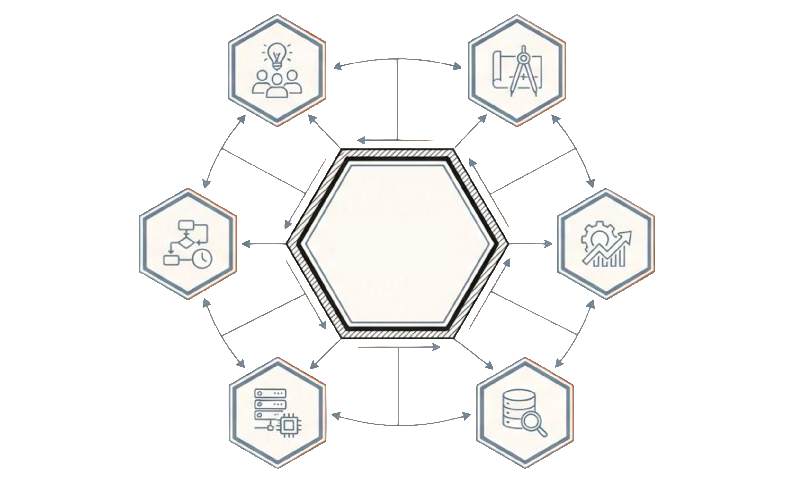
CDAIO Leadership
Strategy
Roadmap,
Gap Analysis
Value Delivery
Portfolio,
ROI
Data
Quality,
Governance
People
Talent, Upscaling,
Culture
Processes
Pattern Recog,
Algorithms
Tech & Techniques
Infrustructure,
MLOps
A holistic mandate. Neglecting "People" or "Process" creates technical debt, regardless of how advanced the "Tech" is.
The Value Chain: Farm to Table Analogy
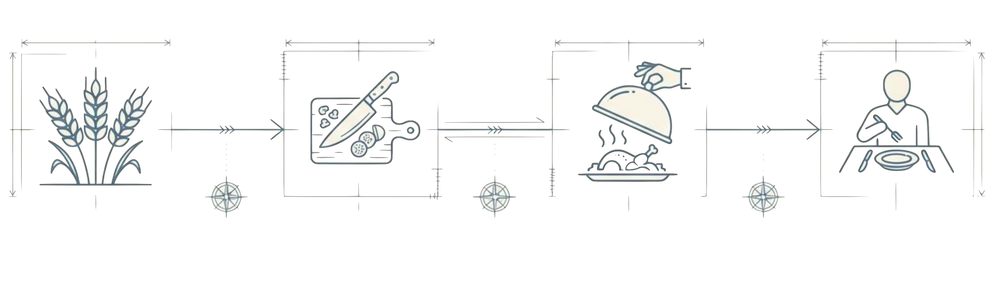
Farmers (Data/Tech, Upstream)
Growing Raw Material,
Transactional Systems
Kitchen Prep (Data/Tech, Midstream)
Cleaning & Prep,
Data Factory & Governance
Chefs (Analyitics)
Creating Recipes & Plating,
Algorithms & Insights
Patrons (Business)
Consuming the Meal,
Decision Making
4 Methods to Get Things Done
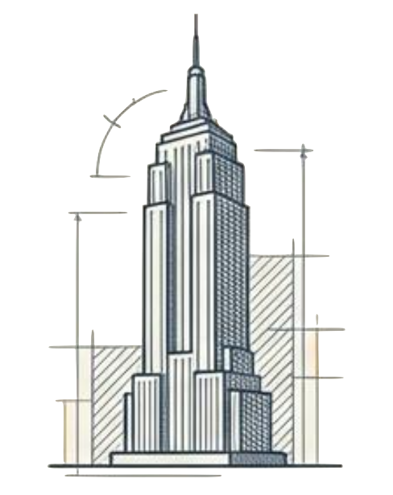
1. The High-Rise
(Waterfall)
Sequential dependencies. Good for foundational infrastructure.
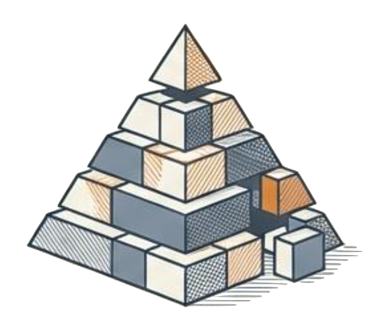
2. The Pyramid
(Agile)
Sectional delivery. Finish one functional area before starting the next.
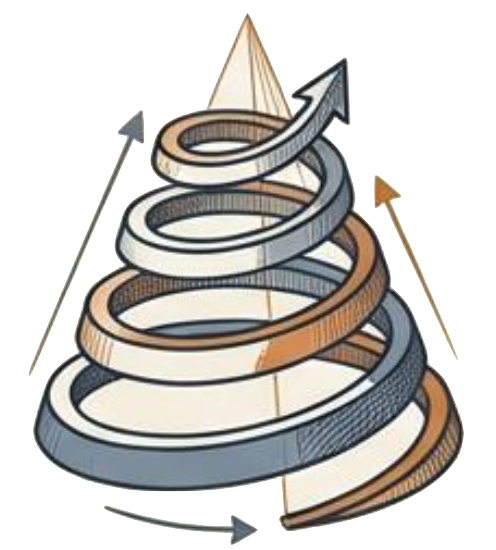
3. The Spiral
(Iterative)
R&D and Capability building. Gaining maturity with every loop.
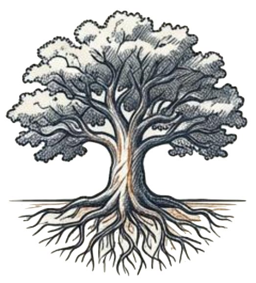
4. The Tree
(Growth)
Culture & Talent. Requires patience, soil, and humility.
Bridging the Organizational Gap
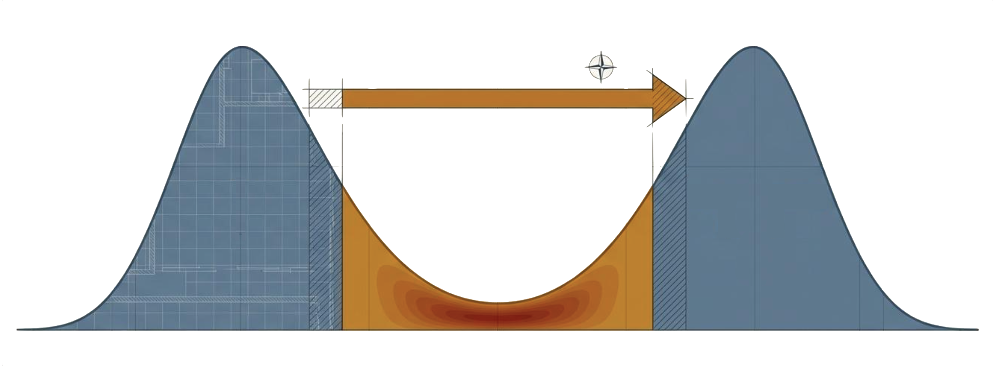
The Translators
The Gap:
Data & Analytics Professionals
Tech Skills
(IT)
Business Skills
(Ops)
Friction occurs because Tech and Business speak different languages. The CAO's mandate is to fill this valley with translators who convert specs into value.
The Economics of Analytics: Defining Value
Value in Use (Internal)
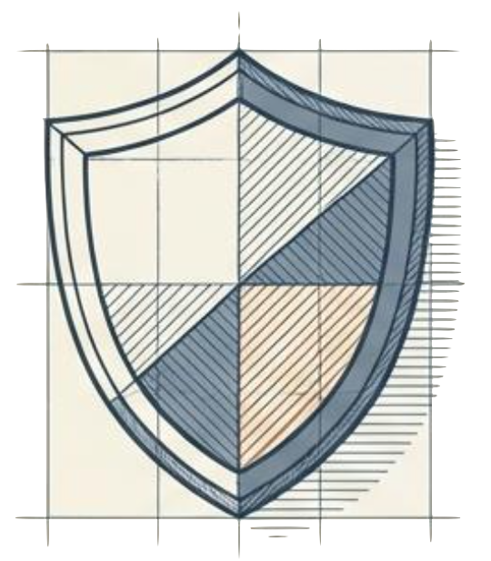
• Efficiency & Cost Reduction
• Metric: Better outcome for same cost
• The "Water" in the Water-Diamond Paradox
Value in Exchange (External)
• Revenue Generation
• Commercialization & Data Products
• Treating Data as a Balance Sheet Asset
ROI Hierarchy
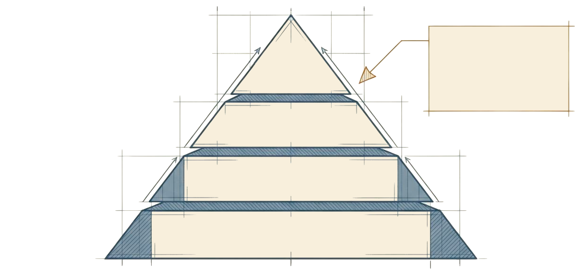
Level 1: Monetary (Hard ROI)
Revenue Uplift, Cost Savings. (30-70% attribution)
Level 2: Efficiency
Time Saved, Workforce Productivity
Level 3: Benchmarks
NPS, Maturity Assessment Scores
Level 4:
Soft Benefits
Culture, Brand
Equity, Talents
The Investment Thesis:
Balance short-term "Dividend Yield" (Base) with long-term "Market Appreciation" (Peak).
The Investment Thesis: Balancing Value & Growth
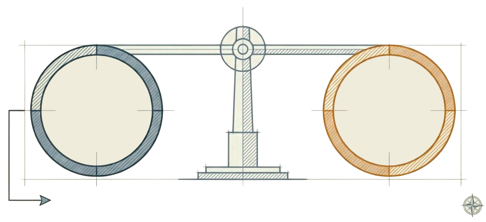
Dividend Yield
(Short-Term)
Tactical ROI,
Efficiency,
Cash Flow.
"Proof of Worth".
Market Appreciation
(Long-Term)
Strategic Benefits,
Culture Change,
Capability Building.
"Future Valuation".
A healthy portfolio requires both. Do not sacrifice Market Appreciation by demanding immediate Dividend Yield on every initiative.
The Board's Role: Governance & Oversight
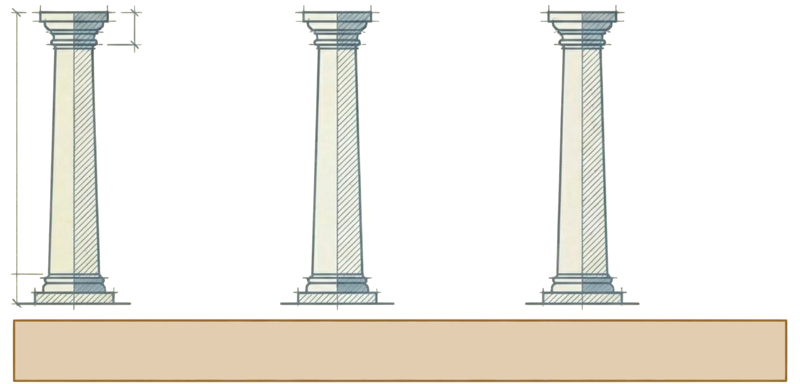
Business Strategy
Recruit directors with practitioner's expertise. Ensure AI aligns with core goals.
Corporate Culture
Support the shift to data-driven mindsets. Culture eats strategy.
Org Lifecycle
Use AI to bend the curve upward. Renew the business model.
The Motto: Nose In, Fingers Out.
(Engage with strategy, but don't micromanage execution).